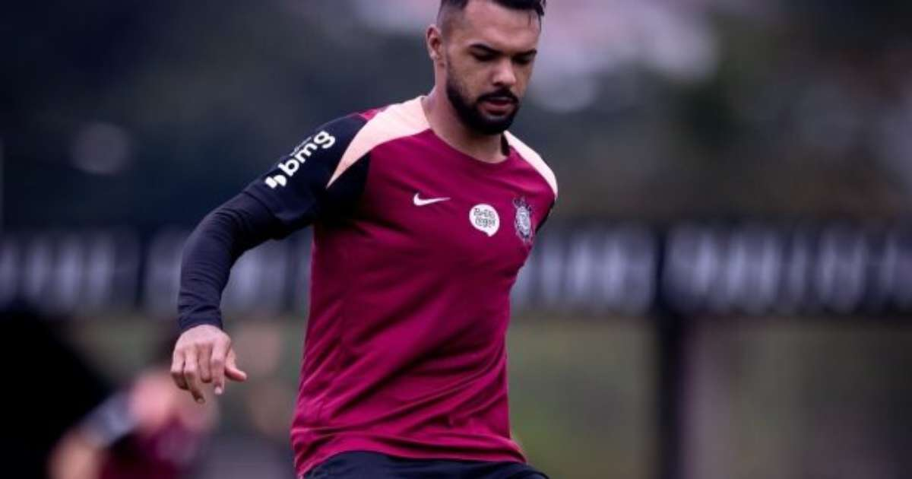

Corinthians
Raniele confirma recuperação física e aborda impactos do ambiente e salários no Corinthians
17/11/2026 às 05:29 (horário de Brasília)

Em entrevista coletiva realizada nesta segunda-feira (16), o volante Raniele anunciou que está clinicamente liberado e à disposição para retornar aos gramados pelo Corinthians, cerca de um mês após ter passado por artroscopia no joelho direito. O jogador avaliou o momento da equipe no Campeonato Brasileiro e destacou a necessidade urgente de somar pontos na tabela.
Ao comentar a rotina do elenco, Raniele admitiu o desgaste mental provocado pelas constantes controvérsias que cercam os bastidores do Parque São Jorge. Ele apontou que trabalhar sob sucessivas polêmicas torna a convivência pesada e interfere no rendimento psicológico do grupo, que busca estancar erros defensivos para garantir a permanência na Série A.
O atleta também se pronunciou sobre os vencimentos atrasados mantidos pelo clube, que incluem salários, premiações e meses de direitos de imagem. Embora tenha ressaltado que a diretoria precisa quitar suas obrigações financeiras, declarou que a preocupação dos jogadores está voltada prioritariamente ao risco de rebaixamento, definindo a situação na tabela como o maior incômodo atual.